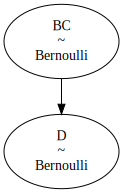

%run jupyter_fixes.ipynbDSAN 5650 HW2 Guide
Extra Writeups
import pandas as pd
import numpy as np
import matplotlib.pyplot as plt
import patchworklib as pw
import seaborn as sns
import pymc as pm
import arviz as az<Figure size 100x100 with 0 Axes>[Part 4] A Non-Regression Example
Why All the Different Models With Different Priors in the Beginning?
This part was intended to basically combine two key Bayesian Workflow ‚Äúlessons‚Äù into one problem, but was maybe over-complicated because of this üò®. The two lessons are:
- The fact that the regressions you implemented in HW2A and HW2B are far from the only models that you can implement using PyMC, and then
- How you can customize your model, using prior predictive checks, to develop a parameterization that better captures the range of possible data, before the second step of then going and estimating the specific values of these parameters.
The importance of these prior predictive checks, that Part 4 is trying to drive home, is also captured in the following excerpts from Gabry et al. (2019):
If we specify proper priors for all parameters in the model, a Bayesian model yields a joint prior distribution on parameters and data, and hence a prior marginal distribution [a prior predictive distribution] for the data, i.e. Bayesian models with proper priors are generative models.
which means that
we can visualize simulations from the prior marginal distribution of the data to assess the consistency of the chosen priors with domain knowledge.
The implication here is that prior predictive model modeling is in fact crucial to the scientific method! However, rather than subjecting you to a full-on deep-dive into how different priors can represent different “states” of knowledge about scientific hypotheses, for now you can just focus on the goal of developing weakly informative priors, defined as follows (in the same paper):
A prior leads to a weakly informative joint prior data-generating process if draws from the prior data-generating distribution \(p(y)\) [the prior predictive distribution] could represent any data set that could plausibly be observed.
A Simpler Prior-Focused Workflow
It may have been a bad idea to jump directly to count data here, since that’s usually the third kind of model that you learn in e.g. a Statistical Learning course (like DSAN 5300)… So, here let’s step back to the second kind of model that you usually learn: logistic regression for binary outcome data (the first kind of model you usually learn is basic linear regression for continuous outcome data, which is covered in HW2A and HW2B).
The goal of weakly informative priors would be, as mentioned above, to cover different plausible datasets that could be observed out in the world for the phenomenon you’re trying to model.
So, here as a simple case let’s try to develop a weakly informative prior for NBA team outcomes:
- The worst team in NBA history, by win percentage, was the 2011-2012 Charlotte Bobcats[1], who won 7 games out of a total of 66 that season (there are usually 82, but there was a labor dispute that year which cut the season short), for a win probability of 0.106. Extrapolating to a standard 82-game season, this means they were on pace to win 9 games (rounded to the nearest integer)
- The best team in NBA history, by win percentage, was the 2015-2016 Golden State Warriors, who won 73 games out of a total of 82, for a win probability of 0.890
- The Orlando Magic, this past season (2024-2025), achieved the most-average possible record, winning 41 games out of a total of 82, for a win probability of exactly 0.500.
So, if we were trying to model the different win probabilities for a given team across a given season, a weakly informative prior should at least be able to capture this range of possibilities, from 9 to 73 games[2].
- For those who don’t know this, Jeff for some reason really likes sports and is able to remember a bunch of random statistics from a bunch of random players/teams across different US professional sports. So… these are from memory, sorry if they’re wrong.
- Don’t worry – as we’ll see below, part of the whole modeling process is constructing a model that can satisfy different people’s opinions about what is “plausible”. So, we’ll get to the fact that it’s possible for teams to be worse than the 2011-2012 Bobcats or better than the 2015-2016 Warriors!
indices = {'game_num': list(range(1, 82+1))}
with pm.Model(coords=indices) as nba_model:
p_win = pm.Uniform("p_win", 0, 1)
win = pm.Bernoulli("win", p=p_win, dims="game_num")
num_wins = pm.Deterministic("num_wins", pm.math.sum(win))
pm.model_to_graphviz(nba_model)with nba_model:
nba_prior_idata = pm.sample_prior_predictive(random_seed=5650)Sampling: [p_win, win]az.summary(nba_prior_idata)arviz - WARNING - Shape validation failed: input_shape: (1, 500), minimum_shape: (chains=2, draws=4)| mean | sd | hdi_3% | hdi_97% | mcse_mean | mcse_sd | ess_bulk | ess_tail | r_hat | |
|---|---|---|---|---|---|---|---|---|---|
| num_wins | 42.246 | 24.658 | 4.000 | 81.000 | 1.105 | 0.495 | 470.0 | 436.0 | NaN |
| win[1] | 0.480 | 0.500 | 0.000 | 1.000 | 0.022 | 0.001 | 507.0 | 500.0 | NaN |
| win[2] | 0.534 | 0.499 | 0.000 | 1.000 | 0.022 | 0.002 | 503.0 | 500.0 | NaN |
| win[3] | 0.518 | 0.500 | 0.000 | 1.000 | 0.021 | 0.001 | 545.0 | 500.0 | NaN |
| win[4] | 0.524 | 0.500 | 0.000 | 1.000 | 0.023 | 0.001 | 471.0 | 471.0 | NaN |
| ... | ... | ... | ... | ... | ... | ... | ... | ... | ... |
| win[79] | 0.528 | 0.500 | 0.000 | 1.000 | 0.023 | 0.001 | 474.0 | 474.0 | NaN |
| win[80] | 0.530 | 0.500 | 0.000 | 1.000 | 0.022 | 0.001 | 500.0 | 500.0 | NaN |
| win[81] | 0.498 | 0.500 | 0.000 | 1.000 | 0.022 | 0.000 | 537.0 | 500.0 | NaN |
| win[82] | 0.564 | 0.496 | 0.000 | 1.000 | 0.023 | 0.003 | 461.0 | 461.0 | NaN |
| p_win | 0.516 | 0.294 | 0.041 | 0.969 | 0.013 | 0.006 | 472.0 | 444.0 | NaN |
84 rows × 9 columns
nba_prior_df = nba_prior_idata.prior.to_dataframe().reset_index().drop(columns="chain")
ax = pw.Brick(figsize=(3.5, 2.25));
sns.histplot(
x="num_wins", data=nba_prior_df, ax=ax,
);
ax.axvline(x = 9, ls='dashed', color='black', alpha=0.9);
ax.axvline(x = 73, ls='dashed', color='black', alpha=0.9);
ax.savefig()And indeed, from this plot we can see that we have a weakly informative prior with respect to our above criteria: the prior predictive distribution assigns a positive probability mass to all values between 9 and 73.
In fact, now we can address the footnote above: here, even someone who believes that any number of wins between 0 and 82 inclusive is plausible would find this satisfactory as a weakly informative prior, since it actually assigns a positive probability mass to all values between 0 and 82.
This need not be the case, however – meaning, there are priors which the “9 to 73 is plausible” person would call “weakly informative” while the “0 to 82 is plausible” person would not.
Here’s an example, using the Truncated operator that PyMC provides, which allows us to do the following:
- Define a Binomial distribution to represent a number of games between 0 and 82, but then
- Truncate the pmf of the “true” 0-to-82 distribution down to a 9-to-73 distribution, by “chopping off” the values outside of \(\{9, 10, \ldots, 73\}\) and re-normalizing the probability masses to sum to 1.
It’s a bit silly, as you’ll see from the visualization, and we’re modeling the season as a whole rather than individual games like in the above model, but yeah it’s here to show you an example prior which can violate the “weakly informative” criteria!
with pm.Model() as trunc_model:
num_wins_raw = pm.TruncatedNormal("num_wins_raw", mu=41, sigma=20, lower=8.51, upper=73.49)
num_wins = pm.Deterministic("num_wins", pm.math.round(num_wins_raw))
pm.model_to_graphviz(trunc_model)with trunc_model:
trunc_prior_idata = pm.sample_prior_predictive(draws=5000, random_seed=5650)Sampling: [num_wins_raw]az.summary(trunc_prior_idata)arviz - WARNING - Shape validation failed: input_shape: (1, 5000), minimum_shape: (chains=2, draws=4)| mean | sd | hdi_3% | hdi_97% | mcse_mean | mcse_sd | ess_bulk | ess_tail | r_hat | |
|---|---|---|---|---|---|---|---|---|---|
| num_wins_raw | 41.135 | 15.854 | 14.794 | 71.13 | 0.229 | 0.12 | 4808.0 | 4653.0 | NaN |
| num_wins | 41.134 | 15.852 | 12.000 | 68.00 | 0.229 | 0.12 | 4823.0 | 4600.0 | NaN |
trunc_prior_df = trunc_prior_idata.prior.to_dataframe().reset_index().drop(columns="chain")
ax = pw.Brick(figsize=(3.5, 2.25));
sns.histplot(
x="num_wins", data=trunc_prior_df, ax=ax,
);
ax.axvline(x = 9, ls='dashed', color='black', alpha=0.9);
ax.axvline(x = 73, ls='dashed', color='black', alpha=0.9);
ax.savefig()The visualization shows, if you look really closely, that we indeed have a weakly-informative prior relative to the first (“Only 9 to 73 is plausible”) person’s criteria, but it’s not weakly-informative relative to the second (“0 to 82 is plausible”) person’s. We could also directly verify this by converting the data from the 10,000 draws into a proper probability distribution and checking that it in fact assigns positive probability mass to each value from 9 to 73:
trunc_prior_df['num_wins'] = trunc_prior_df['num_wins'].astype(int)
win_counts_df = trunc_prior_df['num_wins'].value_counts().to_frame().reset_index().sort_values(by='num_wins')
win_counts_df['prob'] = win_counts_df['count'] / win_counts_df['count'].sum()
win_counts_df| num_wins | count | prob | |
|---|---|---|---|
| 64 | 9 | 24 | 0.0048 |
| 60 | 10 | 36 | 0.0072 |
| 62 | 11 | 31 | 0.0062 |
| 55 | 12 | 44 | 0.0088 |
| 59 | 13 | 38 | 0.0076 |
| ... | ... | ... | ... |
| 51 | 69 | 51 | 0.0102 |
| 57 | 70 | 42 | 0.0084 |
| 56 | 71 | 43 | 0.0086 |
| 61 | 72 | 33 | 0.0066 |
| 63 | 73 | 30 | 0.0060 |
65 rows × 3 columns
And we see, indeed, a low-but-positive probability mass on each number of wins from 9 to 73!
[Part 5] Firing Squad
It’s a bit hard to come up with starter code for this question but, let’s try! Note how the Firing Squad example boils down to just a bunch of dyadic (two-node) relationships like:
- If the Court Orders come in, then the Captain announces the order
- If the Captain announces the order, Soldier \(A\) shoots
- If the Captain announces the order, Soldier \(B\) shoots
- If Soldier \(A\) shoots, the Prisoner dies
- If Soldier \(B\) shoots, the Prisoner dies
So, maybe the starter code can just be one “link” in this chain of causality. Let’s model a dog named Selena who has been trained to dance (\(D\)) when the command “¡Baila conmigo!” (\(BC\)) is spoken. We’ll model a single hangout session with the dog as follows:
- In a given hangout session, the dog trainer issues the “¡Baila conmigo!” (\(BC\)) command with probability \(0.8\)
- If the command is issued, Selena dances (\(D\)) with 100% certainty. Otherwise, she doesn’t dance.
Working Through a Solution
Let’s start by interpreting the facts in the problem as explicit probabilities, to make sure we’re on the same page:
- In a given hangout session, the dog trainer issues the “¡Baila conmigo!” (\(BC\)) command with probability \(0.8\): \(\Pr(BC) = 0.8\)
- If the command is issued, Selena dances (\(D\)) with 100% certainty: \(\Pr(D \mid BC) = 1.0\)
Let’s say we start by just trying to model the command \(BC\) as happening with probability \(0.8\), and the dance \(D\) happening with probability \(1\), without linking the two together. We’d get something like the following:
with pm.Model() as bad_dance_model:
BC = pm.Bernoulli("BC", p=0.8)
D = pm.Bernoulli("D", p=1.0)
pm.model_to_graphviz(bad_dance_model)And by displaying the PGM like this, we can see that something has gone wrong with our modeling, since the command \(BC\) is supposed to have an effect on dancing \(D\): there’s supposed to be an arrow from \(BC\) to \(D\)!
So, this points us towards the fact that the parameter p, the probability of the pm.Bernoulli() Random Variable D, should depend on BC. In this case, we can use pm.math.switch() as basically an if statement which determines the final value of p:
with pm.Model() as dance_model:
BC = pm.Bernoulli("BC", p=0.8)
D = pm.Bernoulli("D", p=pm.math.switch(BC, 1.0, 0.0))
pm.model_to_graphviz(dance_model)
And now the PGM looks as expected.
Probabilities Without \(\textsf{do}()\)
Off rip, let’s “extract” some general probabilistic facts about this stochastic system we’ve now set up, before we apply \(\textsf{do}()\) or observe data or anything like that.
To achieve this, we use the first of three different ways you can derive information from a pm.Model() object: PyMC’s sample_prior_predictive() function[1]. The way I think of this function is that it tells us what we can say about the different variables without having any additional information besides the model itself: any information, that is, besides the probability distributions of the RVs and how they’re linked together.
Sampling from the prior distribution looks as follows:
- The names of the functions in PyMC are extremely confusing imo (though they do update them all the time given user feedback!): the two types of posterior distributions have separate sampling functions,
sample()for the posterior andsample_posterior_predictive()for the posterior predictive distribution. However, for reasons I don’t entirely understand, we usesample_prior_predictive()to obtain both the prior and prior predictive distributions.
with dance_model:
dance_prior_idata = pm.sample_prior_predictive(random_seed=5650)Sampling: [BC, D]Printing out the information in dance_prior_idata on its own isn’t that helpful, unless you already know how the xarray library works (which is good to know!), but there are two other ways to display the results that are a bit more helpful.
First, there is a library called arviz – which actually used to be part of PyMC until it was split off as an independent Bayesian inference visualization library – that you can use to display summary statistics of the sampling:
az.summary(dance_prior_idata.prior)arviz - WARNING - Shape validation failed: input_shape: (1, 500), minimum_shape: (chains=2, draws=4)| mean | sd | hdi_3% | hdi_97% | mcse_mean | mcse_sd | ess_bulk | ess_tail | r_hat | |
|---|---|---|---|---|---|---|---|---|---|
| D | 0.762 | 0.426 | 0.0 | 1.0 | 0.021 | 0.013 | 412.0 | 412.0 | NaN |
| BC | 0.762 | 0.426 | 0.0 | 1.0 | 0.021 | 0.013 | 412.0 | 412.0 | NaN |
Second, to use the full results of the sampling, you can just convert the idata object into a Pandas DataFrame by using the .to_dataframe() function:
dance_prior_df = dance_prior_idata.prior.to_dataframe()
dance_prior_df| D | BC | ||
|---|---|---|---|
| chain | draw | ||
| 0 | 0 | 0 | 0 |
| 1 | 1 | 1 | |
| 2 | 1 | 1 | |
| 3 | 0 | 0 | |
| 4 | 0 | 0 | |
| ... | ... | ... | |
| 495 | 0 | 0 | |
| 496 | 1 | 1 | |
| 497 | 1 | 1 | |
| 498 | 1 | 1 | |
| 499 | 1 | 1 |
500 rows × 2 columns
If we use this on its own, you’ll notice that it produces a fancy DataFrame with a dual index: first indexed by chain and then by draw. This can be helpful in general, but to me it makes it complicated (since for example chain is useless here while draw can’t be treated like a normal column since it’s an index), so I like to use .reset_index() to transform these from indices into regular columns, and then I usually drop chain (this only becomes useful when you start doing fancy Markov Chain Monte Carlo estimation where you use multiple chains so that you can basically throw away non-convergent estimations):
dance_prior_df = dance_prior_idata.prior.to_dataframe().reset_index().drop(columns="chain")
dance_prior_df| draw | D | BC | |
|---|---|---|---|
| 0 | 0 | 0 | 0 |
| 1 | 1 | 1 | 1 |
| 2 | 2 | 1 | 1 |
| 3 | 3 | 0 | 0 |
| 4 | 4 | 0 | 0 |
| ... | ... | ... | ... |
| 495 | 495 | 0 | 0 |
| 496 | 496 | 1 | 1 |
| 497 | 497 | 1 | 1 |
| 498 | 498 | 1 | 1 |
| 499 | 499 | 1 | 1 |
500 rows × 3 columns
And now that we have the samples in this form, we can plot them using e.g. seaborn like any other data in a Pandas DataFrame! As a “wrapper” around seaborn that makes it easier to arrange multiple plots in a grid, I use a library called patchworklib, which is what the pw.Brick() and the ax.savefig() lines are for here. For example, I can create plots of the distributions for both \(BC\) and \(D\) here and then place them side-by-side using |:
ax_bc = pw.Brick(figsize=(3.5, 2.25));
sns.histplot(
x="BC", data=dance_prior_df, ax=ax_bc, discrete=True, shrink=0.2
);
ax_d = pw.Brick(figsize=(3.5, 2.25));
sns.histplot(
x="D", data=dance_prior_df, ax=ax_d, discrete=True, shrink=0.2
);
ax_prior = ax_bc | ax_d;
ax_prior.savefig()Applying the \(\textsf{do}()\) Operator
The above plots represent properties of the stochastic system we’ve defined, at the first – associational – level of the Ladder of Causal Inference. But, as we’ve discussed ad nauseam in class, to learn about the second – causal – level of this ladder, we’d like to see what happens when we intervene to force our model to represent the world where the command \(BC\) is issued: how does this affect the “downstream” dance variable \(D\)?
By intervening to force \(BC \leftarrow 0\), and then separately to force \(BC \leftarrow 1\), and looking at the resulting values of \(D\), we can infer precisely the causal impact of \(BC\) on \(D\), rather than just the co-occurrence-based conditional probability \(\Pr(D \mid BC)\).
from pymc.model.transform.conditioning import do
do_BC1_model = do(dance_model, {'BC': 1})
pm.model_to_graphviz(do_BC1_model)with do_BC1_model:
BC1_idata = pm.sample_prior_predictive(random_seed=5650)Sampling: [D]BC1_idata_df = BC1_idata.prior.to_dataframe()
BC1_idata_df| D | ||
|---|---|---|
| chain | draw | |
| 0 | 0 | 1 |
| 1 | 1 | |
| 2 | 1 | |
| 3 | 1 | |
| 4 | 1 | |
| ... | ... | |
| 495 | 1 | |
| 496 | 1 | |
| 497 | 1 | |
| 498 | 1 | |
| 499 | 1 |
500 rows × 1 columns
BC1_idata_df['D'].mean()1.0from pymc.model.transform.conditioning import do
do_BC0_model = do(dance_model, {'BC': 0})
pm.model_to_graphviz(do_BC0_model)
with do_BC0_model:
BC0_idata = pm.sample_prior_predictive(random_seed=5650)
BC0_idata_df = BC0_idata.prior.to_dataframe()
BC0_idata_dfSampling: [D]| D | ||
|---|---|---|
| chain | draw | |
| 0 | 0 | 0 |
| 1 | 0 | |
| 2 | 0 | |
| 3 | 0 | |
| 4 | 0 | |
| ... | ... | |
| 495 | 0 | |
| 496 | 0 | |
| 497 | 0 | |
| 498 | 0 | |
| 499 | 0 |
500 rows × 1 columns
BC0_idata_df['D'].mean()0.0And so we get our causal effect:
\[ \mathbb{E}[D \mid \textsf{do}(BC \leftarrow 1)] - \mathbb{E}[D \mid \textsf{do}(BC \leftarrow 0)] = 1 - 0 = 1 \]
\(\textsf{do}()\) vs. Conditional Probability in this Model
Now, what would the conditional probability \(\Pr(D \mid BC)\) give us here? Let’s check using the dance_prior_df DataFrame we created earlier, but just subsetting it to check co-occurrences rather than using the fancy do() function in PyMC:
BC1_df = dance_prior_df[dance_prior_df['BC'] == 1].copy()
BC1_df['D'].mean()1.0BC0_df = dance_prior_df[dance_prior_df['BC'] == 0].copy()
BC0_df['D'].mean()0.0And so we have, in this case, that
\[ \mathbb{E}[D \mid BC = 1] - \mathbb{E}[D \mid BC = 0] = 1 - 0 = 1, \]
meaning that the causal effect is equal to the conditional effect:
\[ \mathbb{E}[D \mid \textsf{do}(BC \leftarrow 1)] - \mathbb{E}[D \mid \textsf{do}(BC \leftarrow 0)] = \mathbb{E}[D \mid BC = 1] - \mathbb{E}[D \mid BC = 0] \]
Why did we get this result in this case? If we tried to generalize from this (which lots of early scientists do), we might think it means that \(\textsf{do}()\) is unnecessary overkill – it looks like we can just use the conditional operator \(|\)… But, in fact, the above equality only holds because the model was so simple that there were no backdoor paths which could bias the conditional probabilities away from the direct causal effect.
The Relation to Backdoor Paths
The Firing Squad example, however, is not so simple: on top of the direct path \(A \rightarrow D\), there is a backdoor path \(A \leftarrow C \rightarrow B \rightarrow D\), which has exactly the effect of making the \(\textsf{do}()\)-based difference
\[ \mathbb{E}[D = 1 \mid \textsf{do}(A \leftarrow 1)] - \mathbb{E}[D = 1 \mid \textsf{do}(A \leftarrow 0)] \]
not equal to the conditional difference
\[ \mathbb{E}[D = 1 \mid A = 1] - \mathbb{E}[D = 1 \mid A = 0]. \]
If we had enough data on \(D\) with respect to the behavior of \(A\) (for example, data on \(A\) shooting and not-shooting in different Firing Squads) and \(C\) (for example, cases where \(C\) decided not to follow the court orders, and refused to order the shooting), then we know from class that we could in fact infer the causal \(\textsf{do}()\)-based effect from this observational data by closing the backdoor path:
Since \(C\) is a fork in the triple \(A \leftarrow C \rightarrow B\), the first triple in the backdoor path here, we know that we could compute \(\mathbb{E}[D = 1 \mid A = 1] - \mathbb{E}[D = 1 \mid A = 0]\) separately for the two different values of \(C\) (\(C = 1\) and \(C = 0\)), and if our causal model was indeed the truth about the world then we would successfully obtain the \(\textsf{do}()\)-based effect without actually having to intervene in the system!